Aperiodic tilings: the search for a shape that never repeats
A tiled floor is usually built from a small repeatable unit. Slide that unit sideways or upward and the pattern lines up again. But can shapes cover an infinite plane without gaps or overlaps while making every repeating pattern impossible?
Yes. The idea began with colored squares studied by logicians, grew into the familiar Penrose patterns, and culminated in 2023 with the Hat and the Spectre: single shapes that tile the plane, but only non-periodically.
TL;DR — The 60-Year Quest in Plain English
If you tile a floor with squares, bricks, or hexagons, the pattern repeats itself every few centimeters in a predictable grid. For over 60 years, mathematicians asked whether a set of shapes—or even a single shape—could cover an infinite flat floor with zero gaps and zero overlaps, while its geometry forces the pattern never to repeat. This guide walks through what "aperiodic" really means and how each famous tile set works from the ground up.
What does “never repeats” mean?
A tiling covers a surface with copies of shapes, with no gaps or overlaps. A tiling is periodic if translating it by some non-zero distance leaves the entire pattern unchanged. A single unusual patch can disrupt an otherwise repeating floor, so mathematicians ask a stronger question:
Can a set of tiles cover the plane, yet make every possible tiling non-periodic?
Such a set is aperiodic. Its pieces can still appear in repeated local arrangements; what is forbidden is a translation that repeats the whole infinite pattern. A monotile is one shape used in this kind of construction. The playful term einstein is a pun on the German ein Stein—“one stone.”
The Beginner's Tracing-Paper Test: Periodic vs. Non-Periodic vs. Aperiodic
Before looking at complex shapes, notice why only three regular polygons can tile a flat floor by themselves: equilateral triangles (\(60^\circ\) corners), squares (\(90^\circ\) corners), and regular hexagons (\(120^\circ\) corners). Where corners meet, their angles must add up to \(360^\circ\) (\(6 \times 60^\circ = 360^\circ\), \(4 \times 90^\circ = 360^\circ\), \(3 \times 120^\circ = 360^\circ\)). Regular pentagons have \(108^\circ\) corners—three leave a \(36^\circ\) gap (\(324^\circ\)), and four overlap (\(432^\circ\)).
Now, how do mathematicians test whether a valid tiling "repeats"? Imagine laying a giant sheet of transparent tracing paper over an infinite tiled floor and tracing every grout line:
- Periodic Tiling (Repeats): If you slide (translate) the tracing paper straight in some direction without rotating or flipping it, and every traced line lands back on top of the floor's grout lines at once, the tiling has translational symmetry (it is periodic).
- Non-Periodic Tiling (Can Fail to Repeat by Choice): Imagine an infinite grid of \(1 \times 1\) squares where you glue just two squares in the middle together to make a single \(1 \times 2\) rectangle. Now, if you slide the tracing paper, that one rectangle ruins the global match. The floor is technically non-periodic, but only because of a localized flaw—the shapes themselves still easily allow a repeating grid.
- Aperiodic Tile Set (Forced Never to Repeat): A set of shapes is aperiodic if the shapes can cover the infinite plane with zero gaps and zero overlaps, yet even if you try your hardest to arrange them into a repeating grid, the shapes themselves make repetition impossible.
Note on Rotation vs. Sliding: An aperiodic tiling is allowed to have rotational symmetry around a point (for example, rotating a Penrose tiling by \(72^\circ\) around its center) and small clusters of tiles will appear infinitely many times across the floor—just never at regular, repeating intervals when you slide the pattern!
| Term | Applies To | Beginner Meaning |
|---|---|---|
| Periodic | A finished pattern (tiling) | You can slide the entire pattern by some fixed distance and direction, and it lands identically on top of itself. |
| Non-periodic | A finished pattern (tiling) | Sliding the entire pattern in any direction without rotating never makes the whole infinite pattern match up again. |
| Aperiodic | A set of tiles (prototiles) | The tiles can cover the infinite plane, and every complete tiling they are capable of forming is guaranteed to be non-periodic. |
| Einstein (Monotile) | A single tile shape | From German ein Stein ("one stone"): a single shape that forms an aperiodic set all by itself. |
flowchart LR
A["Can the shapes tile the plane?"] -->|No| B["Not a tiling set"]
A -->|Yes| C{"Can any complete tiling repeat by translation?"}
C -->|Yes| D["Periodic tiling is possible"]
C -->|No| E["Aperiodic tile set"]Three ways tiles can prevent repetition
The surprising part is that a tile does not need to “know” what is happening far away. Local rules can force a global structure that has no translational period. Three recurring ideas help explain how:
- Matching rules: edge colors, lines, arrows, or shaped notches restrict which neighbors can meet. A plain set of outlines may tile periodically; the matching rules are part of the mathematical construction.
- Substitution and hierarchy: a small patch is forced to assemble into a larger patch, which in turn assembles into still larger ones. The ever-growing hierarchy is one way to prove that no translation can leave the whole tiling unchanged.
- Incommensurate geometry: irrational scale factors or distances often appear in these constructions. They can support an aperiodicity proof, but an irrational length ratio by itself is not enough. It must be tied to the actual matching rules or hierarchy.
Some proofs also use cut-and-project ideas: a non-repeating pattern in a plane can be understood as a carefully selected “shadow” or slice of a higher-dimensional periodic structure. That is a mathematical construction, not evidence that every aperiodic tiling is a projection.
How Local Rules Control an Infinite Floor (In Plain English)
How can a "dumb" geometric tile on one side of a room prevent a pattern from repeating a kilometer away?
- The Jigsaw Rule (Matching Rules): Think of matching rules like jigsaw tabs or colored domino ends. If a blue tab must plug into a blue slot, placing one tile immediately restricts which tiles can sit next to it.
- The Russian Nesting Doll Effect (Substitution & Inflation Hierarchy): When matching rules are designed cleverly, small groups of tiles are forced to lock together into a larger cluster—called a supertile or metatile—that behaves like a scaled-up version of the original tiles. Those Level-1 supertiles are forced to form Level-2 supertiles, which form Level-3 supertiles, growing infinitely large.
- Why does this forbid repetition? Suppose someone claims the floor repeats every \(10\) meters. You simply zoom out to a supertile level where each supertile is \(100\) meters wide. Sliding the floor by \(10\) meters knocks every \(100\)-meter supertile out of alignment with itself! Because supertiles exist at arbitrarily large scales, no slide distance \(d > 0\) can ever work.
- Incommensurable Ratios (Irrational Numbers): Periodic grids rely on whole-number ratios (\(1:1\), \(1:2\), \(2:3\)). Many aperiodic systems lock their matching rules or hierarchies to irrational numbers—such as the Golden Ratio \(\phi = \frac{1+\sqrt{5}}{2} \approx 1.618\), the Silver Ratio \(1+\sqrt{2} \approx 2.414\), or \(\sqrt{3} \approx 1.732\)—which can never be written as a fraction of whole numbers.
- The High-Dimensional Shadow (Cut-and-Project): Imagine shining a light through a regular 3D crystal lattice onto a flat 2D wall tilted at an irrational slope. Even though the 3D grid is completely periodic, the selected slice projected onto the 2D wall forms an ordered pattern that never repeats.
From colored edges to Penrose patterns
Wang tiles: matching colors, forbidding repetition
In 1961, mathematician Hao Wang proposed studying square tiles whose edges carry colors. Tiles may slide but not rotate or flip, and neighboring edges must match. These Wang tiles turn a geometric puzzle into a system of local rules.
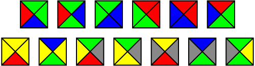
A 13-tile aperiodic Wang set. Image: Anomie, public domain; file page.

Wang conjectured that any tile set able to cover the plane could also do so periodically. In 1966, his student Robert Berger disproved the conjecture with a set of \(20,426\) Wang tiles. Later constructions made the sets dramatically smaller. In 2015, Emmanuel Jeandel and Michael Rao proved that 11 tiles and 4 edge colors are minimal: no aperiodic Wang set can use fewer than \(11\) tiles or fewer than \(4\) colors.
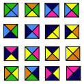
An aperiodic set of 16 Wang tiles. Image: T. Yamaguchi, public domain; file page.

Wang tiles also connect tiling to computation. Matching rules can encode steps in a calculation, and aperiodic sets helped establish that there is no general algorithm that decides whether an arbitrary Wang-tile set can tile the plane.
The “domino problem” asks whether an algorithm can always decide if a given finite set of Wang tiles can cover the infinite plane. Berger’s construction helped show that no such general decision procedure exists. This is related to undecidability in computation, but it is better not to say that the tiling problem is simply identical to the Halting Problem: the two problems are connected through reductions in computability theory.
The Jeandel–Rao result is a precise minimum for Wang tiles: among aperiodic sets of Wang squares, \(11\) tiles and \(4\) colors are optimal under their definition. It does not say that \(11\) is the minimum number of arbitrary shapes needed for every kind of aperiodic tiling.
Beginner Breakdown: How Do Square Wang Tiles Prevent Repetition?
At first glance, squares seem like the easiest shape in the world to repeat. Here is why Wang tiles cannot:
- Rule 1 (No Rotating or Flipping): Every Wang tile is a unit square divided into four colored edge zones (Top, Bottom, Left, Right). You may only slide them; rotating or flipping a square is strictly forbidden.
- Rule 2 (Domino Color Matching): Wherever two tiles touch, their shared edge must have the exact same color (e.g., a red right edge must touch a red left edge).
- Computing with Rows of Colors: Because the bottom colors of one horizontal row restrict which top colors can sit beneath them in the next row, each row of tiles can act like a step in a calculation (where vertical colors represent values and horizontal colors act like "carry" digits).
- Why Repeating Fails: In Berger's (\(20,426\) tiles) and Ammann's (\(16\) tiles) sets, the colors force squares to group into an infinite substitution hierarchy of larger and larger square blocks. In Karel Culik II's \(13\)-tile set (shown above) and Jeandel and Rao's minimal \(11\)-tile set, the rows simulate a transducer that multiplies numbers across rows in a way that can never cycle back to its starting state.
Robinson’s nested patterns
Raphael Robinson found a small aperiodic set of six square-based tiles whose markings force larger and larger structured patches. The resulting hierarchy is a useful way to understand how local constraints can rule out a global repeat.
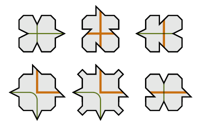
Robinson’s six tiles. Image: Archibald, public domain; file page.

Their markings force a hierarchy of larger square-like arrangements, sometimes visualized as nested picture frames. One should not infer the precise sequence of every intermediate frame from this illustration alone: the proof is the full set of tile rules, not just the appearance of a single patch.
Beginner Breakdown: How Robinson's 6 Tiles Work
In 1971, Raphael Robinson dramatically simplified Berger's \(20,426\) Wang tiles down to just 6 square-based shapes (where rotations and reflections are allowed):
- Jigsaw Corners & Off-Center Notches: Notice the bumpy corners and off-center edge notches on the six shapes in the diagram above, along with their red and blue stripe markings.
- Building Infinite Picture Frames: The first tile on the left (with four outward corner bumps) cannot sit next to another copy of itself. Instead, those bumps force copies of that tile to sit at every other grid spot, forming the four corners of a \(3 \times 3\) square frame.
- Nesting Forever: Once the arm pieces connect those four corners, the center of the \(3 \times 3\) square is forced to hold a corner marking for an even larger \(7 \times 7\) square frame, which in turn forms one corner of a \(15 \times 15\) frame, then \(31 \times 31\), scaling up as \(2^n - 1\) forever. Because every square frame is part of a frame more than twice as wide, no finite translation can leave all frames unchanged.
Penrose: two shapes, five-fold order
Roger Penrose’s tilings brought the subject to a much wider audience. His P1 system uses several tile shapes; later P2 and P3 systems reduce the set to two shapes each: a kite and dart, or a thick and thin rhombus. Appropriate matching rules—shown as arcs, colors, or edge markings—are essential. Without them, the same outlines can often be assembled into periodic patterns. For a computational companion, see “A Tiling That Never Repeats” on Sitmo. It walks through a related Girih-inspired construction—the Shesh Band and Sormeh Dan shapes—and uses Python to build the pattern through geometric transforms and repeated substitutions.
P1: pentagons, stars, and other shapes
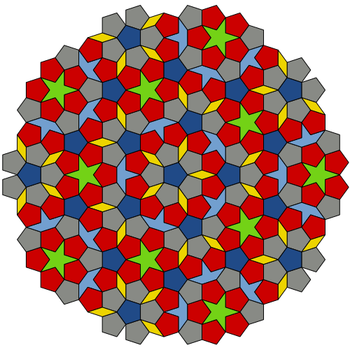
Image: Inductiveload, public domain; file page.
.svg){kind=link}
P2: kite and dart
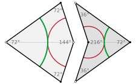
Image: Geometry guy, CC BY-SA 3.0; file page.

P3: thick and thin rhombi
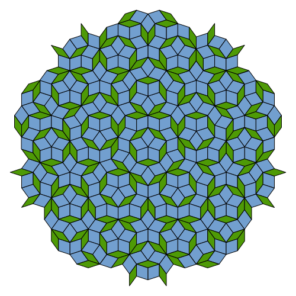
Image: Inductiveload, public domain; file page.
.svg){kind=link}
A Girih-inspired Penrose-style tiling
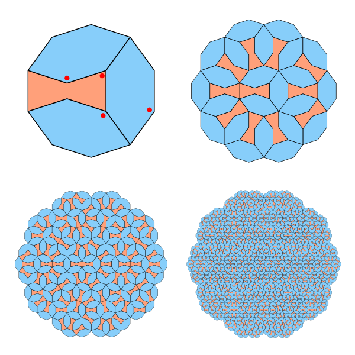
Image: Sitmo, copied from the original article.
The Sitmo article includes its full Python implementation and figures. Its code defines tile vertices, combines rotation/scale/translation transforms, and recursively applies substitution rules. The example below is an original, compact illustration of the transform step; it is not a complete Penrose or Girih tiling generator.
#!/usr/bin/env python3
"""
Verified End-to-End Aperiodic Penrose Tiling Generator (P3 Rhombi & P2 Kite/Dart)
Includes automated geometric verification of side ratios, angles, and area conservation.
"""
import cmath
import math
from typing import List, Tuple
# (triangle_type, vertex_A, vertex_B, vertex_C)
# Invariants maintained across all generations:
# type 0 (Acute, 36°-72°-72°): 36° apex at A; equal legs AB = AC = L; short base BC = L / PHI
# type 1 (Obtuse, 36°-108°-36°): 108° apex at B; equal legs BA = BC; long base AC = leg * PHI
Triangle = Tuple[int, complex, complex, complex]
PHI = (1.0 + math.sqrt(5.0)) / 2.0 # Golden ratio (~1.6180339887)
def create_initial_wheel(radius: float = 1.0) -> List[Triangle]:
"""
Creates a 5-fold symmetric wheel (decagon) of 10 acute Robinson triangles
around the origin.
"""
triangles: List[Triangle] = []
for i in range(10):
b = cmath.rect(radius, (2 * i - 1) * math.pi / 10.0)
c = cmath.rect(radius, (2 * i + 1) * math.pi / 10.0)
if i % 2 == 0:
b, c = c, b
triangles.append((0, 0j, b, c))
return triangles
def subdivide_p3_rhombi(triangles: List[Triangle]) -> List[Triangle]:
"""
One generation of Penrose P3 (Thick & Thin Rhombus) deflation.
- Acute (0) -> 1 Acute (0) + 1 Obtuse (1)
- Obtuse (1) -> 2 Obtuse (1) + 1 Acute (0)
"""
next_gen: List[Triangle] = []
for color, a, b, c in triangles:
if color == 0:
p = a + (b - a) / PHI
next_gen.append((0, c, p, b))
next_gen.append((1, c, p, a))
else:
q = a + (b - a) / PHI
r = a + (c - a) / PHI
next_gen.append((1, c, r, b))
next_gen.append((1, r, q, a))
next_gen.append((0, r, q, b))
return next_gen
def subdivide_p2_kite_dart(triangles: List[Triangle]) -> List[Triangle]:
"""
One generation of Penrose P2 (Kite & Dart) deflation.
- Half-Kite (0) -> 2 Half-Kites (0) + 1 Half-Dart (1)
- Half-Dart (1) -> 1 Half-Kite (0) + 1 Half-Dart (1)
"""
next_gen: List[Triangle] = []
for color, a, b, c in triangles:
if color == 0:
q = a + (b - a) / PHI
r = c + (a - c) / PHI
next_gen.append((0, c, q, b))
next_gen.append((0, c, q, r))
next_gen.append((1, q, r, a))
else:
p = c + (a - c) / PHI
next_gen.append((0, c, p, b))
next_gen.append((1, b, p, a))
return next_gen
def triangle_area(a: complex, b: complex, c: complex) -> float:
"""Computes the unsigned area of triangle ABC."""
return 0.5 * abs((b.real - a.real) * (c.imag - a.imag) - (c.real - a.real) * (b.imag - a.imag))
def verify_geometry(triangles: List[Triangle], expected_area: float, tol: float = 1e-9) -> None:
"""
Mathematically verifies every triangle in the tiling:
1. Type 0 has equal legs AB == AC and ratio AB / BC == PHI (36°-72°-72°).
2. Type 1 has equal legs BA == BC and ratio AC / BA == PHI (36°-108°-36°).
3. Sum of all triangle areas equals the initial wheel area (no gaps or overlaps).
"""
total_area = 0.0
for idx, (color, a, b, c) in enumerate(triangles):
ab = abs(b - a)
ac = abs(c - a)
bc = abs(c - b)
total_area += triangle_area(a, b, c)
if color == 0:
assert math.isclose(ab, ac, rel_tol=tol), (
f"Triangle {idx} (type 0) legs unequal: AB={ab}, AC={ac}"
)
assert math.isclose(ab / bc, PHI, rel_tol=tol), (
f"Triangle {idx} (type 0) ratio AB/BC={ab / bc} != PHI ({PHI})"
)
else:
assert math.isclose(ab, bc, rel_tol=tol), (
f"Triangle {idx} (type 1) legs unequal: BA={ab}, BC={bc}"
)
assert math.isclose(ac / ab, PHI, rel_tol=tol), (
f"Triangle {idx} (type 1) ratio AC/BA={ac / ab} != PHI ({PHI})"
)
assert math.isclose(total_area, expected_area, rel_tol=tol), (
f"Area mismatch: total={total_area}, expected={expected_area}"
)
def get_visible_edges(color: int, a: complex, b: complex, c: complex, mode: str) -> Tuple[complex, complex, complex]:
"""
Returns the 3-point polyline (P1 -> P2 -> P3) representing the two outer
edges of each half-tile, omitting the shared internal diagonal:
- P3 Mode: Type 0 omits BC (draws B->A->C); Type 1 omits AC (draws A->B->C)
- P2 Mode: Type 0 omits AB (draws A->C->B); Type 1 omits BC (draws B->A->C)
"""
if mode.upper() == "P3":
return (b, a, c) if color == 0 else (a, b, c)
else:
return (a, c, b) if color == 0 else (b, a, c)
def export_to_svg(
triangles: List[Triangle],
mode: str = "P3",
filename: str = "penrose_tiling.svg",
size: int = 800,
color_acute: str = "#e07a5f",
color_obtuse: str = "#3d405b",
stroke_color: str = "#f4f1de",
stroke_width: float = 0.003,
) -> None:
"""Exports the verified tiling to a standalone SVG file."""
svg_lines = [
f'<svg xmlns="http://www.w3.org/2000/svg" '
f'viewBox="-1.05 -1.05 2.1 2.1" width="{size}" height="{size}">',
f' <rect x="-1.05" y="-1.05" width="2.1" height="2.1" fill="{stroke_color}"/>',
' <g stroke-linejoin="round" stroke-linecap="round">',
]
# 1. Fill half-tile interiors (with tiny matching stroke to prevent anti-aliasing hairlines)
for color, a, b, c in triangles:
fill = color_acute if color == 0 else color_obtuse
pts = f"{a.real:.6f},{a.imag:.6f} {b.real:.6f},{b.imag:.6f} {c.real:.6f},{c.imag:.6f}"
svg_lines.append(
f' <polygon points="{pts}" fill="{fill}" stroke="{fill}" stroke-width="0.0008"/>'
)
# 2. Stroke only the true tile boundaries (omitting shared internal diagonals)
for color, a, b, c in triangles:
p1, p2, p3 = get_visible_edges(color, a, b, c, mode)
path = (
f"M {p1.real:.6f} {p1.imag:.6f} "
f"L {p2.real:.6f} {p2.imag:.6f} "
f"L {p3.real:.6f} {p3.imag:.6f}"
)
svg_lines.append(
f' <path d="{path}" fill="none" stroke="{stroke_color}" stroke-width="{stroke_width}"/>'
)
svg_lines.append(" </g>")
svg_lines.append("</svg>")
with open(filename, "w", encoding="utf-8") as f:
f.write("\n".join(svg_lines))
print(f"[OK] Saved {len(triangles)} verified half-tiles ({len(triangles)//2} full tiles) to '{filename}'.")
def plot_with_matplotlib(triangles: List[Triangle], mode: str = "P3") -> None:
"""Optional interactive preview using Matplotlib with internal seams hidden."""
try:
import matplotlib.pyplot as plt
from matplotlib.collections import LineCollection, PolyCollection
except ImportError:
print("Matplotlib not installed; skipping interactive window (SVG was generated).")
return
verts = [[(a.real, a.imag), (b.real, b.imag), (c.real, c.imag)] for _, a, b, c in triangles]
colors = ["#e07a5f" if color == 0 else "#3d405b" for color, _, _, _ in triangles]
edge_lines = []
for color, a, b, c in triangles:
p1, p2, p3 = get_visible_edges(color, a, b, c, mode)
edge_lines.append([(p1.real, p1.imag), (p2.real, p2.imag), (p3.real, p3.imag)])
fig, ax = plt.subplots(figsize=(8, 8))
poly_coll = PolyCollection(verts, facecolors=colors, edgecolors=colors, linewidths=0.3)
line_coll = LineCollection(edge_lines, colors="#f4f1de", linewidths=0.8)
ax.add_collection(poly_coll)
ax.add_collection(line_coll)
ax.set_xlim(-1.05, 1.05)
ax.set_ylim(-1.05, 1.05)
ax.set_aspect("equal")
ax.axis("off")
plt.tight_layout()
plt.show()
if __name__ == "__main__":
GENERATIONS = 5
for mode in ("P3", "P2"):
tiles = create_initial_wheel(radius=1.0)
initial_area = sum(triangle_area(a, b, c) for _, a, b, c in tiles)
for gen in range(1, GENERATIONS + 1):
tiles = subdivide_p3_rhombi(tiles) if mode == "P3" else subdivide_p2_kite_dart(tiles)
verify_geometry(tiles, expected_area=initial_area)
print(f"[VERIFIED] Mode {mode} passed all geometric checks across {GENERATIONS} generations.")
export_to_svg(tiles, mode=mode, filename=f"penrose_{mode.lower()}_gen{GENERATIONS}.svg")
The tiles can be grouped into larger versions of themselves, then grouped again, in an inflation hierarchy. This nested structure is one route to proving that the pattern cannot have a translational period. An irrational number such as the golden ratio often appears in the geometry, but an irrational length by itself does not prove a tiling is aperiodic; the matching and hierarchy arguments do the real work.
The golden ratio is
In a Penrose substitution, the inflation factor is \(\phi\): a larger supertile can be decomposed into smaller tiles according to a fixed rule. Repeated deflation and inflation produce the same kinds of shapes at different scales. Matching rules can be drawn as colored arcs or encoded directly as edge notches. A periodic tiling made from unmarked kite and dart outlines would not be the Penrose construction.
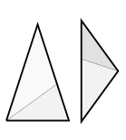
A diagram of triangle decompositions. Image: Geometry guy, CC BY-SA 3.0; file page.

Beginner Breakdown: How Penrose's P1, P2, and P3 Tilings Work
In the 1970s, physicist Roger Penrose wondered how to build a tiling around \(5\)-fold pentagonal geometry (\(72^\circ\) and \(36^\circ\) angles):
- Penrose P1 (Pentagons + Gap-Fillers): Since three regular pentagons (\(108^\circ\) corners) leave a \(36^\circ\) gap, Penrose introduced five-pointed stars, "boats," and thin diamonds (a set of \(6\) prototiles once edge matching rules are included) that neatly plug every \(36^\circ\) gap while forcing pentagons to nest inside larger pentagons.
- Penrose P2 (Kite and Dart — Down to 2 Shapes!): Look at the P2: kite and dart tab above. If you take a \(72^\circ/108^\circ\) diamond (rhombus) and slice its long diagonal at the Golden Ratio (\(\phi \approx 1.618\)), you get a convex Kite (three \(72^\circ\) angles and one \(144^\circ\) angle) and a concave Dart (two \(36^\circ\) wingtips, a \(72^\circ\) nose, and an inward \(216^\circ\) tail).
- Why don't they just re-form the diamond and repeat? Look at the red and green circular arcs drawn on the Kite and Dart. The rule states that touching edges must connect arcs of the same color. If you try to tuck a Kite into the tail of a Dart to make a simple repeating diamond, the colored arcs clash! Instead, the arcs force Kites and Darts to group into larger Kites and Darts scaled up by \(\phi\) at every level.
- Penrose P3 (Thick and Thin Rhombi): Uses just two diamond shapes—a Thick Rhombus (\(72^\circ/108^\circ\)) and a Thin Rhombus (\(36^\circ/144^\circ\))—decorated with matching arcs or edge notches that enforce the same \(\phi\) substitution hierarchy. In any infinite P2 or P3 Penrose tiling, the ratio of thick to thin rhombi (or kites to darts) is exactly \(\phi = \frac{1+\sqrt{5}}{2}\), which cannot be achieved by any finite repeating unit cell.
Beyond five-fold symmetry: Ammann–Beenker and Pinwheel
Other constructions explore different symmetries and behaviors. The Ammann–Beenker tiling combines squares and rhombi in an eight-fold pattern, while the pinwheel tiling uses copies of a right triangle with side lengths \(1\), \(2\), and \(\sqrt{5}\). Its substitution rule produces infinitely many tile orientations—even though the unmarked triangle can also be arranged periodically.
The Ammann–Beenker substitution has inflation factor \(1+\sqrt{2}\), also called the silver mean. Its two shapes are a square and a \(45^\circ/135^\circ\) rhombus. Ammann bars are decorations that continue as straight lines through a correctly matched tiling; related decorations can encode local matching rules. The bare square and rhombus outlines, without the rules or decoration, do not by themselves forbid periodic arrangements.
In the pinwheel substitution, each right triangle of side lengths \(1, 2, \sqrt{5}\) is replaced by five smaller, similar copies. The rule rotates some descendants by an angle related to \(\arctan(1/2)\). Repeating the substitution yields infinitely many orientations, a distinctive feature of the pinwheel tiling. The triangle outline alone can also make periodic tilings, so the substitution rule is important when discussing this example.
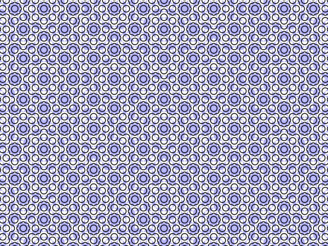
Image: Claudio Rocchini, CC BY 3.0; file page.

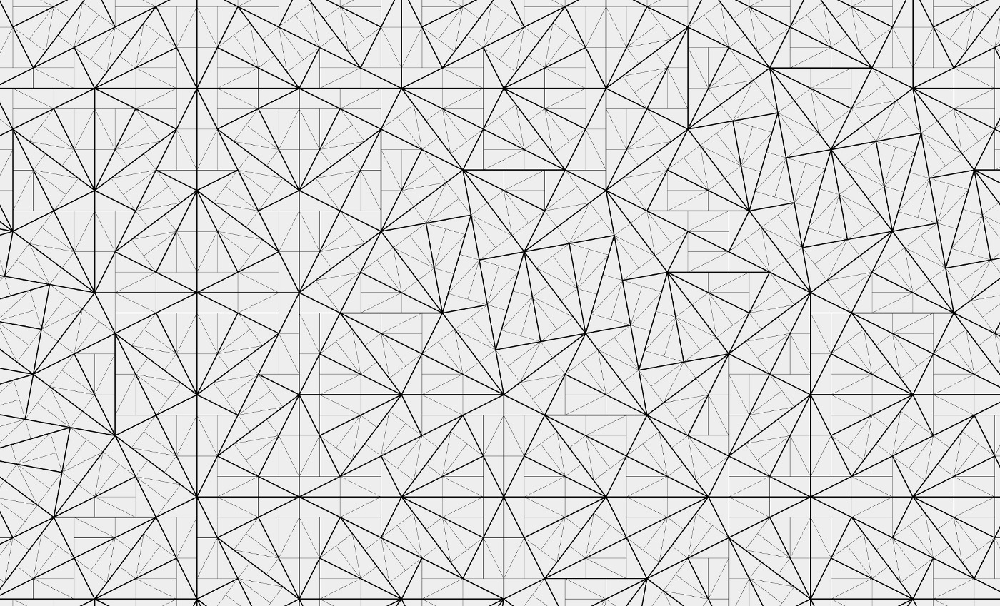
Image: Levochik, CC BY-SA 3.0; file page.

Beginner Breakdown: Ammann Bars and Pinwheel Rotations
- Ammann–Beenker Tiling (8-Fold Octagonal Order): Plain squares and \(45^\circ\) rhombi can trivially tile a floor in repeating strips. To prevent that, amateur mathematician Robert Ammann and F. P. M. Beenker added straight line segments (Ammann bars) across the faces of the two tiles. When tiles meet edge-to-edge, those segments must connect into unbroken straight lines extending across the entire infinite plane, forcing an octagonal substitution hierarchy with inflation factor \(1 + \sqrt{2}\).
- Pinwheel Tiling (Infinitely Many Compass Directions): In Penrose or Ammann–Beenker tilings, every tile points in one of a finite number of compass directions. In 1994, John Conway and Charles Radin studied a right triangle with sides \(1\), \(2\), and \(\sqrt{5}\) (since \(1^2 + 2^2 = (\sqrt{5})^2\)). Each triangle divides into 5 identical smaller copies of itself, with the interior triangles rotated by \(\theta = \arctan(1/2) \approx 26.565^\circ\). Because \(\arctan(1/2)\) is an irrational multiple of \(\pi\), repeating the substitution rotates triangles into infinitely many distinct orientations across the plane!
Near-misses on the road to one tile: Socolar–Taylor, Gummelt, and 3D tiles
The Socolar–Taylor construction is another important near-miss in the search for a single tile: it uses a hexagonal shape with rules that force a hierarchy, but versions of the construction rely on non-local matching rules or a disconnected tile. That distinction helped sharpen the question that the later monotiles would answer.
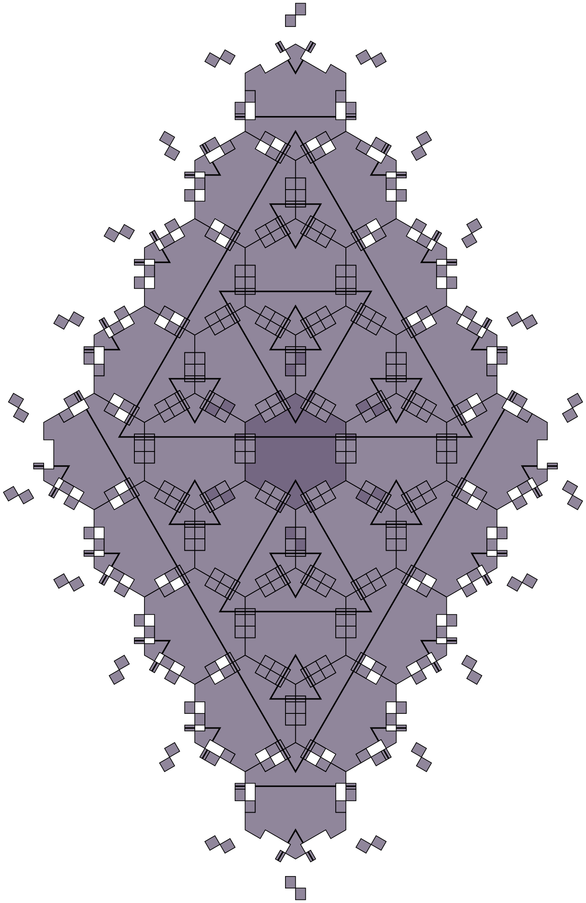
Image: Parcly Taxel, CC BY-SA 4.0; file page.

In the decorated construction, matching stripes and flags organize nested triangles at successively larger scales. Some of the constraints relate tiles that are not immediate edge-neighbors. Converting all such information into ordinary edge-to-edge rules can require a disconnected shape. That is why the Socolar–Taylor example is a useful milestone, but is not the same kind of single connected, unmarked monotile as the Hat.
Another instructive “almost” example is the Gummelt decagon. It can produce Penrose-like order when copies are allowed to overlap in prescribed ways. Overlapping coverings are interesting, but differ from a conventional tiling, where tile interiors do not overlap. A different milestone, the Schmitt–Conway–Danzer tile, is a single shape in three dimensions; its construction involves stacked layers with a screw-like twist. Neither example is a single, connected two-dimensional tile covering the plane without overlaps.
Beginner Breakdown: Why These Were 'Near-Misses' for the 2D Einstein Problem
Before 2023, researchers came remarkably close to a single aperiodic tile, but each candidate had a geometric catch:
| Near-Miss Candidate | How It Works | The Catch |
|---|---|---|
| Schmitt–Conway–Danzer Tile (1988) | A single convex 3D polyhedron that fills 3D space without translational repetition. | Only works in 3D space, using a screw-like twist between stacked periodic layers. |
| Gummelt Decagon (1996) | A single decorated 10-sided shape that forces a Penrose pattern in 2D. | Requires adjacent tiles to overlap (a covering, not a gapless/overlap-free tiling). |
| Socolar–Taylor Tile (2010) | A single 2D hexagon whose black stripes build an infinite hierarchy of \(2^n\) nested triangles. | Requires non-local matching rules between non-touching tiles—or breaks into disconnected pieces in 2D if converted to pure geometry. |
The Hat: one shape, no periodic tiling
In 2023, David Smith, Joseph Samuel Myers, Craig Kaplan, and Chaim Goodman-Strauss published a solution to the long-running einstein monotile problem. Their Hat is a single connected polygonal shape—a polykite assembled from eight smaller kites—that tiles the plane, but cannot produce a periodic tiling.
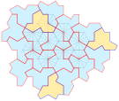
Image: Gringer, CC BY-SA 4.0; file page.

The proof involves clusters called metatiles. The Hat’s geometry forces tiles into those clusters, and the clusters themselves obey a hierarchy at larger scales. The paper also gives a separate, computer-assisted combinatorial proof. This is more precise than saying that the Hat works simply because it contains an irrational edge-length ratio: the result rests on the forced structure and proofs.
The Hat’s discovery came from David Smith, a hobbyist who explored tile shapes, working with mathematicians Joseph Samuel Myers, Craig Kaplan, and Chaim Goodman-Strauss. Their 2023 paper gives two complementary routes: it shows how Hat tiles form metatiles that themselves follow a substitution hierarchy, and separately supplies a computer-assisted combinatorial argument. The metatiles are commonly labeled \(H\), \(P\), \(T\), and \(F\); successive levels grow by a factor related to \(\phi^2\). The result is stronger than finding one attractive non-repeating arrangement: the proof rules out periodic tilings by the shape.
The same paper studies a continuum of related polygons, often written \(\mathrm{Tile}(a,b)\), as the underlying kite dimensions vary. It includes the Hat and the Turtle and limiting shapes called the Chevron and Comet. The paper proves aperiodicity for generic members of this family using a geometric incommensurability argument, and also gives the separate hierarchical proof for the Hat. This family is a subtle result; it should not be reduced to the slogan “\(\sqrt{3}\) is irrational, therefore the Hat is aperiodic.”
There is an important detail: tilings by the Hat require both its ordinary orientation and its mirror image. Reflections are allowed when placing the tile. So the Hat solved the one-shape problem, but it did not settle the stricter question of whether a single handed shape could do the same.
That distinction matters for physical tiles with a marked front and back: rotating a tile preserves its handedness, while reflecting it changes it. In a mathematical tiling, reflections are ordinarily allowed unless the problem says otherwise. The Hat’s mirror copies are not a weakness in its proof; they are simply part of the transformations used in its tilings.
Beginner Breakdown: How the 13-Sided 'Hat' Works Step-by-Step
- Cut From a Simple Hexagonal Kite Grid: Look at the faint grey hexagons inside the Hat tiling diagram above. If you draw lines from the center of a regular hexagon to the midpoints of its \(6\) sides, you divide the hexagon into \(6\) identical four-sided kites (each with angles \(60^\circ, 90^\circ, 120^\circ, 90^\circ\) and edge lengths \(1\) and \(\sqrt{3}\)). Gluing \(8\) of those kites edge-to-edge produces the \(13\)-sided Hat (\(\mathrm{Tile}(1, \sqrt{3})\)).
- Zero Markings Needed: Unlike Wang, Robinson, or Penrose tiles, the Hat has no painted stripes, colors, or artificial matching rules. Its \(13\)-sided outline alone enforces aperiodicity.
- Forced Clustering into \(H, P, T, F\) Metatiles: In any valid tiling, every flipped (reflected) Hat (colored dark blue in the figure above) must be surrounded by \(3\) unflipped Hats (light blue). Across the plane, every Hat is forced into one of four local clusters called metatiles:
- \(H\) metatile: \(4\) Hats (\(1\) reflected + \(3\) unreflected) in a hexagonal cluster.
- \(P\) metatile: \(2\) Hats in a parallelogram-like cluster.
- \(T\) metatile: \(1\) Hat in a triangular cluster.
- \(F\) metatile: \(2\) Hats in a three-pronged wing cluster.
- Infinite Nesting Hierarchy: Once formed, the \(H, P, T, F\) metatiles can only fit together by assembling into scaled-up \(H', P', T', F'\) super-metatiles (inflating in linear scale by \(\phi^2 = \frac{3+\sqrt{5}}{2} \approx 2.618\) at each step), continuing to infinity.
- The Continuum \(\mathrm{Tile}(a,b)\): By varying the two alternating edge lengths \((a, b)\) of the polygon:
- \(\mathrm{Tile}(0,1)\) (Chevron) and \(\mathrm{Tile}(1,0)\) (Comet) at the extremes tile periodically.
- \(\mathrm{Tile}(1,\sqrt{3})\) is The Hat (\(8\) kites), and \(\mathrm{Tile}(\sqrt{3},1)\) is The Turtle (\(10\) kites)—both aperiodic!
- Every shape in the continuum \(\mathrm{Tile}(a,b)\) for \(a, b > 0\) is aperiodic except when \(a = b\) (\(\mathrm{Tile}(1,1)\)), which leads directly to the next discovery: The Spectre.
The Spectre: an aperiodic tile that never flips
The same team answered that follow-up with the Spectre, published later in 2023. It is a strictly chiral aperiodic monotile: its valid tilings use rotations and translations, but not reflected copies. The paper establishes aperiodicity through a hierarchical substitution system.


The Spectre is related to the equilateral member of the Hat family. The authors first study a weakly chiral case in which aperiodicity holds when reflections are forbidden, then modify the boundary to obtain the strictly chiral Spectre. The altered edges enforce handedness geometrically; the proof still relies on the substitution hierarchy, rather than on a visual impression that the outline looks difficult to flip.
Beginner Breakdown: How the Spectre Eliminates Flipping ('The Vampire Einstein')
Why did the team nickname the Spectre a "Vampire Einstein"? Because it is an einstein tile that never appears in a mirror (no reflections allowed)! Here is how it works:
- Start with Equilateral \(\mathrm{Tile}(1,1)\): When you set \(a = 1\) and \(b = 1\) in the Hat/Turtle family, all \(14\) edges have equal length. If you allow both left-handed and right-handed (flipped) copies, \(\mathrm{Tile}(1,1)\) can tile periodically. However, if you forbid reflections and use only one handedness, \(\mathrm{Tile}(1,1)\) is forced to act like a Hat in some places and a Turtle in others—tiling the plane only non-periodically!
- Curve the Edges to Block Flipped Copies: To prevent anyone from ever placing a flipped tile, the authors modified the \(14\) straight edges of \(\mathrm{Tile}(1,1)\) into identical S-curves (or polygonal notches), producing the Spectre.
- One-Sided Interlocking: When all Spectres are kept face-up (same handedness), the curves interlock seamlessly, and the tiles are forced into a hierarchical substitution system that never repeats. If you flip a Spectre upside-down, its curved edges clash with unflipped tiles, making reflections geometrically unusable.
| Milestone | What it contributes | Important qualification |
|---|---|---|
| Berger’s Wang tiles (1966) | A finite set of matching squares that tiles only non-periodically | \(20,426\) tiles in the original construction |
| Robinson tiles (1971) | A small system forcing a growing hierarchy | Uses a set of marked prototiles |
| Penrose tilings (1970s) | Famous two-shape systems with five-fold order | Matching rules are essential |
| Ammann–Beenker tiling | Square-and-rhombus octagonal order | Uses substitution and matching decorations |
| Pinwheel tiling (1994) | A substitution with infinitely many orientations | The triangle alone is not an aperiodic monotile |
| Socolar–Taylor (2010) | A one-shape hierarchical construction | Non-local rules or disconnected variants matter |
| Jeandel–Rao (2015) | An optimal \(11\)-tile, \(4\)-color Wang set | Minimality is specifically for Wang tiles |
| Hat (2023) | One connected two-dimensional aperiodic monotile | Reflected copies are used |
| Spectre (2023) | A strictly chiral aperiodic monotile | Reflections are not allowed |
Why these patterns matter beyond the puzzle
The connection to quasicrystals is a particularly striking one. In 1982, Dan Shechtman observed diffraction patterns with symmetry that did not fit the then-standard picture of periodic crystals. The discovery helped establish that materials can have long-range order without ordinary translational periodicity. Shechtman received the 2011 Nobel Prize in Chemistry for the discovery of quasicrystals.
A mathematical tiling is not a literal atomic model of every quasicrystal, but aperiodic patterns offer a useful way to think about order without a repeating unit cell. The same ideas continue to interest mathematicians and materials scientists; specific engineering benefits, however, depend on separate evidence and should not be inferred from a tiling proof alone.
An ideal quasicrystal can be ordered enough to produce sharp diffraction patterns while lacking ordinary translational periodicity. The Nobel Foundation’s account describes Shechtman’s 1982 observation and notes that the discovery changed how scientists define crystals. Quasicrystals have since been synthesized in laboratories and identified in a natural mineral. Their unusual hardness, friction, and thermal properties have prompted materials research; the Nobel Foundation describes applications such as reinforcing steel and experimental cookware and engine components. Those are properties of particular quasicrystalline materials, not automatic consequences of arranging Hat or Spectre tiles.
Claims sometimes attached to aperiodic “metamaterials”—for example, guaranteed crack resistance, zero Poisson’s ratio, or graphene-like quantum states—need separate experimental or theoretical sources. They do not follow from the Hat or Spectre aperiodicity proofs, so they are not presented here as established applications.
Beginner Intuition: What Is a Quasicrystal?
Before 1982, crystallography textbooks taught that solid materials fell into two categories:
- Periodic Crystals (like table salt or quartz): Atoms line up in a repeating 3D unit cell. Firing an electron or X-ray beam through them produces sharp diffraction spots, restricted by periodic geometry to \(2\)-, \(3\)-, \(4\)-, or \(6\)-fold rotational symmetry.
- Amorphous Solids / Glasses: Atoms are disordered at long range, producing diffuse, blurry rings under diffraction.
When Dan Shechtman examined a rapidly cooled aluminum–manganese alloy in April 1982, he saw sharp diffraction spots arranged with \(10\)-fold (\(5\)-fold) symmetry—showing that matter can possess strict long-range order without a repeating periodic lattice, much like a 3D counterpart of a Penrose tiling.
Where they could be applied
Aperiodic shapes and tilings serve three major purposes across mathematics, theoretical computer science, and materials science: proving how local rules control infinite space, demonstrating the limits of computer algorithms, and modeling non-repeating atomic structures in physics and chemistry.
Below is the detailed breakdown in MkDocs-compatible Markdown format.
1. Pure Mathematics: How Local Rules Control Global Space
At first glance, a tile on one side of a floor has no way of "knowing" what a tile is doing a mile away. The primary mathematical purpose of aperiodic shapes is to show that purely local rules can force an infinite global structure that never repeats by translation:
- Testing the Limits of Geometry: For decades, mathematicians asked whether a set of shapes could cover an infinite plane without gaps or overlaps while making every repeating pattern impossible.
- Forcing Hierarchy Without Blueprints: Through edge colors, notches, or pure geometry, these shapes force small patches to assemble into larger clusters (supertiles or metatiles), which in turn assemble into even larger clusters at successively bigger scales.
- Solving the "Einstein" Monotile Problem: The decades-long progression from 20,426 tiles down to 2 tiles (Penrose) and finally 1 tile (The Hat and The Spectre in 2023) answered a foundational question in geometry: a single connected shape's outline alone is enough to forbid translational repetition across an infinite plane.
2. Computer Science: Proving What Computers Can Never Solve
Before aperiodic tilings became famous in art or physics, they were invented by logicians to study the limits of computation:
- Turning Geometry into Calculation: In 1961, logician Hao Wang introduced square tiles with colored edges (Wang tiles) that can slide but cannot rotate or flip. Because matching edge colors restrict which neighbors can meet, rows of tiles can encode sequential steps in a mathematical calculation.
- The "Domino Problem": Wang asked whether a universal computer algorithm could take any finite set of tiles and decide in advance whether they can cover the infinite plane.
- Proving Undecidability: Wang realized that if every tile set that covers the plane could also do so in a repeating (periodic) loop, a computer could eventually find that loop. When Robert Berger discovered the first aperiodic set of 20,426 Wang tiles in 1966, it proved that tiles can cover the plane without ever entering a repeating loop. This helped prove that no general algorithm exists to decide whether an arbitrary set of Wang tiles can tile the plane—linking geometry directly to undecidability and the Halting Problem through reductions in computability theory.
3. Physics & Chemistry: Understanding Quasicrystals
For generations, crystallography assumed that for a solid material to have long-range atomic order, its atoms had to be arranged in a repeating, periodic 3D grid. Aperiodic tilings provided the conceptual framework to overturn that rule:
- A Blueprint for Non-Repeating Order: In 1982, scientist Dan Shechtman observed diffraction patterns in a metal alloy with symmetry that did not fit standard periodic crystals. His discovery proved that physical matter can possess strict long-range order—producing sharp diffraction patterns—without having ordinary translational periodicity.
- Redefining Crystals (2011 Nobel Prize): This discovery forced scientists to alter the official definition of a crystal to include quasicrystals, earning Shechtman the 2011 Nobel Prize in Chemistry.
- Conceptual Modeling: While a 2D mathematical tiling is not a literal atomic model of every quasicrystal, aperiodic patterns (such as Penrose's five-fold tilings and Ammann–Beenker's eight-fold tilings) give physicists and chemists a rigorous mathematical way to understand order without a repeating unit cell.
4. Real-World Materials & Engineering Applications
Quasicrystals—which have both been synthesized in laboratories and found in a natural mineral—exhibit physical properties that differ sharply from ordinary periodic metals:
- Unusual Physical Properties: Quasicrystalline materials are noted for their unusual hardness, low friction, and distinctive thermal properties.
- Industrial Uses of Quasicrystals: According to the Nobel Foundation, these properties have led to materials research and practical applications including:
- Reinforcing steel to create exceptionally strong alloys.
- Experimental cookware coatings that take advantage of low surface friction and hardness.
- Engine components where durability and thermal insulation are valuable.
5. Separating Proven Applications from "Metamaterial" Hype
When the Hat and Spectre monotiles were discovered in 2023, many popular discussions speculated about futuristic engineering uses, so it is important to keep a clear scientific boundary between mathematical proofs and physical materials:
| Category | What Is Established | What Requires Separate Proof |
|---|---|---|
| Mathematical Proof | The Hat and Spectre prove that a single 2D shape can force non-periodic tilings across an infinite plane. | A tiling proof alone does not automatically guarantee engineering benefits. |
| Quasicrystal Materials | Particular quasicrystalline materials exhibit unusual hardness, friction, and thermal properties, with applications in reinforcing steel, experimental cookware, and engine components. | Those properties belong to particular quasicrystalline materials and are not automatic consequences of arranging Hat or Spectre tiles. |
| Aperiodic Metamaterials | Aperiodic patterns offer mathematicians and materials scientists a useful way to think about order without a repeating unit cell. | Claims of guaranteed crack resistance, zero Poisson's ratio, or graphene-like quantum states need separate experimental or theoretical sources and do not follow from the Hat or Spectre aperiodicity proofs. |
Explore further
- An aperiodic set of 11 Wang tiles — Jeandel and Rao
- An aperiodic monotile — Smith, Myers, Kaplan, and Goodman-Strauss
- A chiral aperiodic monotile — Smith, Myers, Kaplan, and Goodman-Strauss
- Penrose rhomb tiling — Bielefeld University tilings encyclopedia
- Pinwheel tiling — Bielefeld University tilings encyclopedia
- Ammann–Beenker tiling — Bielefeld University tilings encyclopedia
- The Nobel Prize in Chemistry 2011
- The Nobel Foundation’s 2011 press release on quasicrystals
- Interactive Hat tiling app
- Interactive Spectre tiling app
- Sitmo article and its complete code
Image credits
The locally stored figures below are unmodified copies of files hosted by Wikimedia Commons. Each linked file page records the original description and license. Creative Commons images are reproduced under their stated licenses; CC BY-SA material remains subject to the applicable share-alike terms.
- Wang tiles — Anomie, public domain.
- Wang 16 tiles — T. Yamaguchi, public domain.
- Robinson tiles — Archibald, public domain.
- Penrose P1 tiling — Inductiveload, public domain.
- Kite and dart tiles — Geometry guy, CC BY-SA 3.0.
- Penrose rhomb tiling — Inductiveload, public domain.
- Robinson triangle decompositions — Geometry guy, CC BY-SA 3.0.
- Ammann–Beenker tiling — Claudio Rocchini, CC BY 3.0.
- Pinwheel tiling — Levochik, CC BY-SA 3.0.
- Socolar–Taylor tiling — Parcly Taxel, CC BY-SA 4.0.
- Hat tiling — Gringer, CC BY-SA 4.0.
- Spectre tile, small patch, and large patch — David Smith, Joseph Samuel Myers, Craig S. Kaplan, and Chaim Goodman-Strauss, CC BY-SA 4.0.